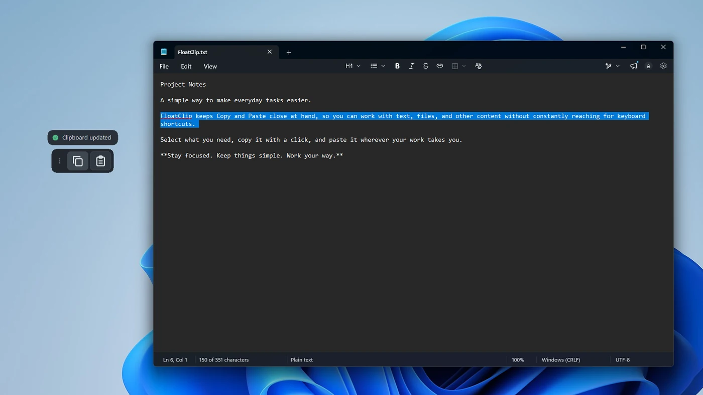
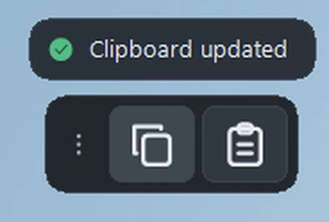
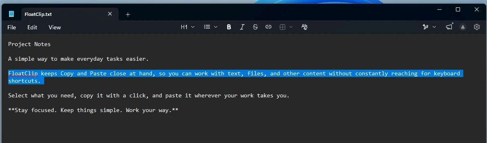
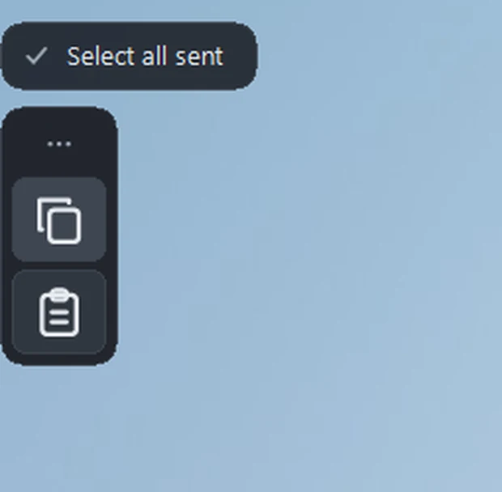
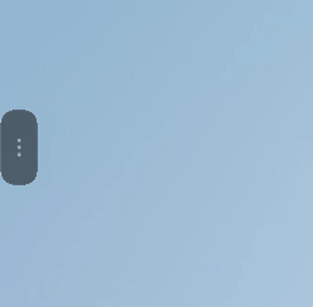
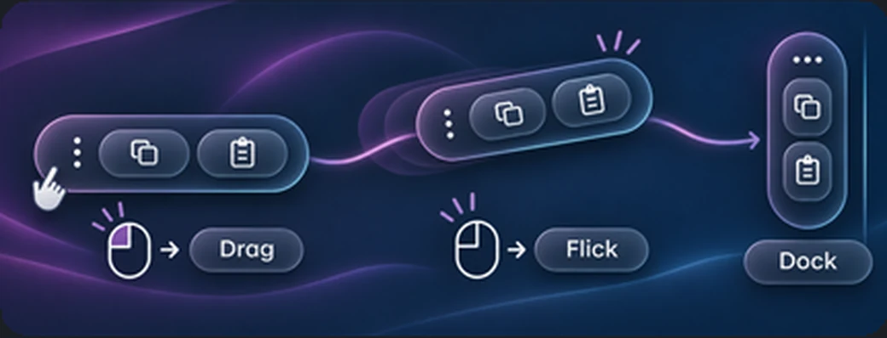
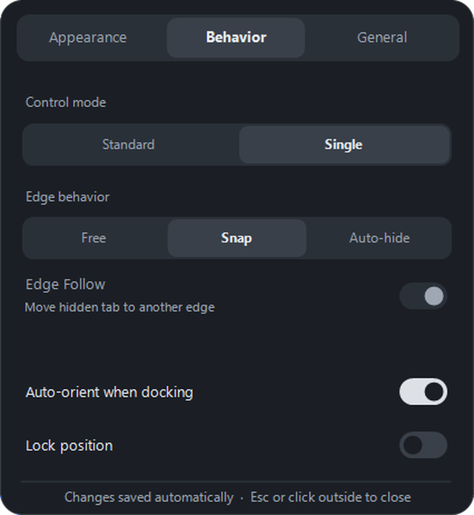
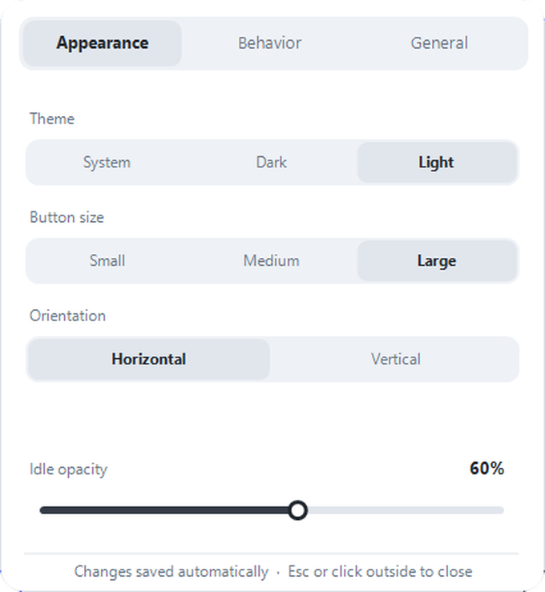
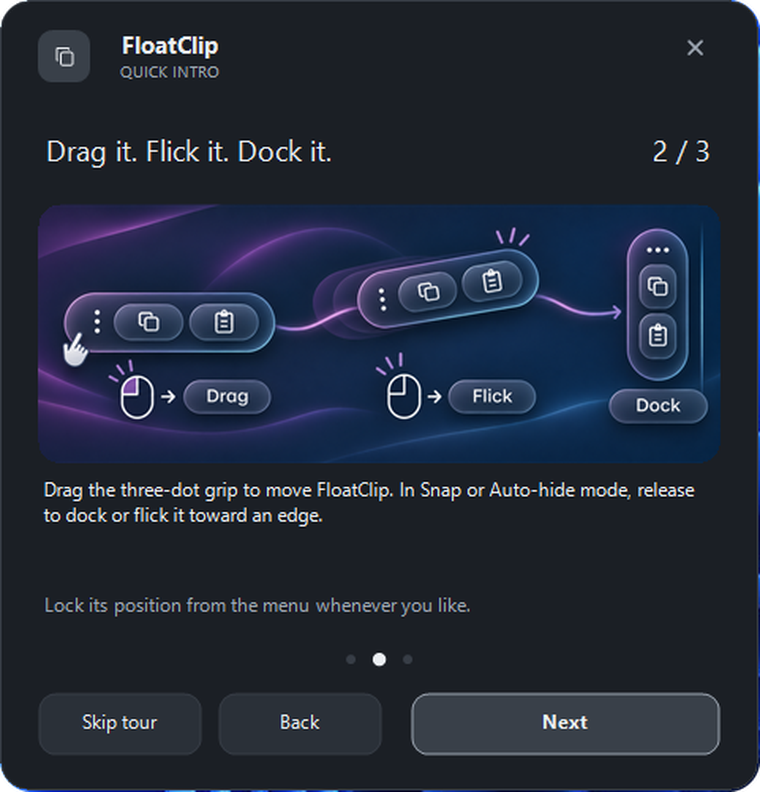

Izvirni pripomoček za Windows 11
Kopiraj. Prilepi.
Nadaljuj.
Plavajoča orodna vrstica, ki ostane blizu tvojega dela. Premakni jo, pripni na rob ali jo diskretno skrij.
Stabilna v1.0.0 · Windows 11 x64 · Brezplačna prenosna izdaja


Že na voljo
Prenesi FloatClip v1.0.0
Brezplačna prenosna izdaja za Windows 11 x64. Prenesi ZIP, ga razširi in zaženi FloatClip.exe. Brez namestitvenega programa in računa.
Brezplačna lastniška programska oprema · Brez oglasov · Brez FloatClip telemetrije · Založnik: machinefhead
Različica v1.0.0 je v certifikaciji. Prenos iz trgovine še ni javno dostopen.
16B503A7F2C9CF9BECBF46262236BC03976A4BFEBB060DE09E9FC3887390C022FloatClip od blizu
Majhen pripomoček. Veliko svobode.
Vsi prikazi temeljijo na pristnih posnetkih FloatClipa. Postavitve so promocijske, prikazani elementi aplikacije pa resnični.
Znane funkcije. Vedno pri roki.
Copy in Paste sta vedno blizu. Desni klik na Copy izbere vse, desni klik na Paste pa potrdi z Enter. FloatClip aktivni aplikaciji pošilja običajne bližnjice Windows.
Prava kapsula in označeno besedilo v Windows 11. Detajl je povečan za boljšo berljivost.

Pripni. Skrij. Prikliči.
Sam določi položaj FloatClipa. Snap pusti kapsulo vidno ob robu, Auto-hide pa jo umakne v majhen jeziček. Edge Follow lahko skriti jeziček premika med bližnjimi robovi.
Dve resnični, različni stanji aplikacije, postavljeni drug ob drugega za prikaz delovanja.


Premikanje z občutkom.
Kapsulo povleci za tri pikice. Ob robu jo lahko pripneš; močnejši met doda nekaj vztrajnosti. Ko najdeš pravi položaj, ga zakleni.

Tvoje namizje. Tvoja pravila.
Izberi svetlo ali temno temo, velikost kapsule, usmerjenost in prosojnost v mirovanju. Na voljo sta načina Standard in Single ter različna pravila pripenjanja.
Pravi okni Settings: Behavior (temna tema) in Appearance (svetla tema).


Pravo okno FloatClipV treh korakih do uporabe.
Vgrajeni Quick Intro na kratko predstavi klike, premikanje, pripenjanje in samodejno skrivanje — neposredno v aplikaciji.
Pravo okno Quick Intro, 2. stran od 3.

Pravo okno FloatClipPripomoček, ki ostane na tvojem računalniku.
Brez računov pri razvijalcu, oglasov, analitike ali FloatClip telemetrije. Nastavitve se hranijo lokalno. FloatClip uporablja sistemske funkcije odložišča in ne vodi svoje zgodovine kopiranih vsebin.
FloatClip v1.0.0 je javno na voljo kot brezplačna prenosna izdaja. Različica za Microsoft Store je še v certifikaciji in ni javno dostopna. Založnik: machinefhead.